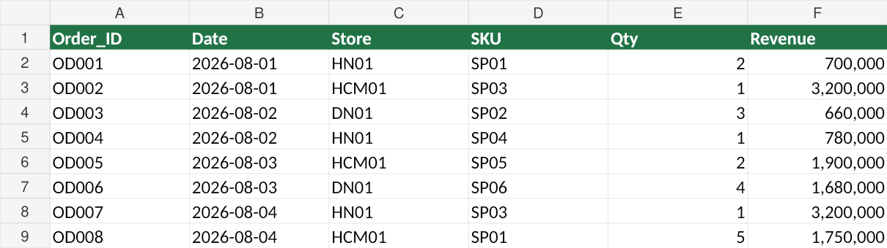
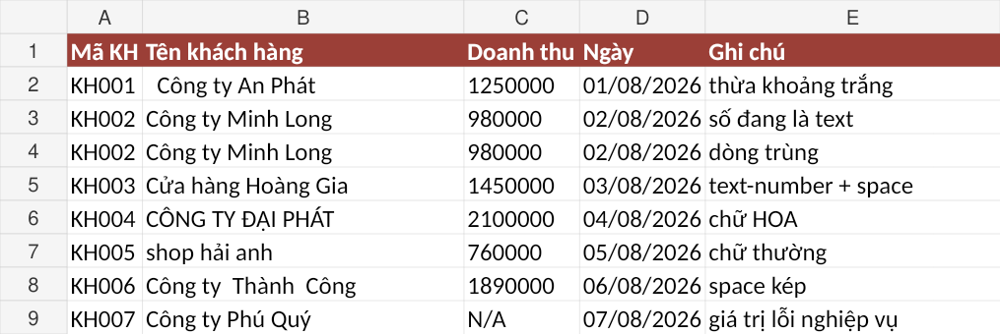
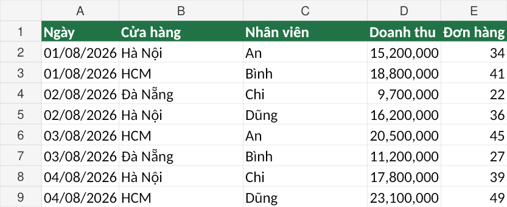
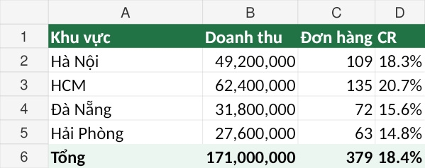
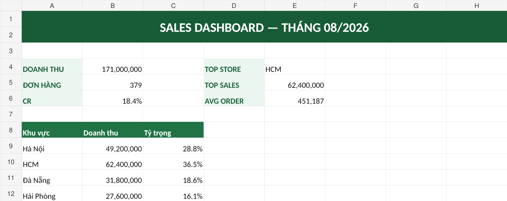

Sales Dashboard
P1–P3 làm sạch dữ liệu thô · P4–P6 Pivot & Dashboard trên file sạch.
YOUTUBE PRACTICE
Mỗi chủ đề là một project hoàn chỉnh. Hiện tại có 1 project: Sales Dashboard.
P1–P3 làm sạch dữ liệu thô · P4–P6 Pivot & Dashboard trên file sạch.
Chuẩn hóa cấu trúc, xử lý lệch tên cột, Append về Master_DoanhSo

Ngày/số dạng text, khoảng trắng, SKU lỗi, ô trống, duplicate, giá trị không đồng nhất

Số lượng âm, đơn giá 0, chiết khấu bất thường, phí ship âm, doanh thu sai

Doanh thu, khu vực, NVBH, sản phẩm, kênh, trạng thái đơn, KPI chính

Bố cục, KPI card, Pivot Chart, biểu đồ chính, sắp xếp dễ nhìn

Slicer, Timeline, Refresh PQ → Pivot → Dashboard, Before/After
Kéo / vuốt · lăn chuột · phím ← →